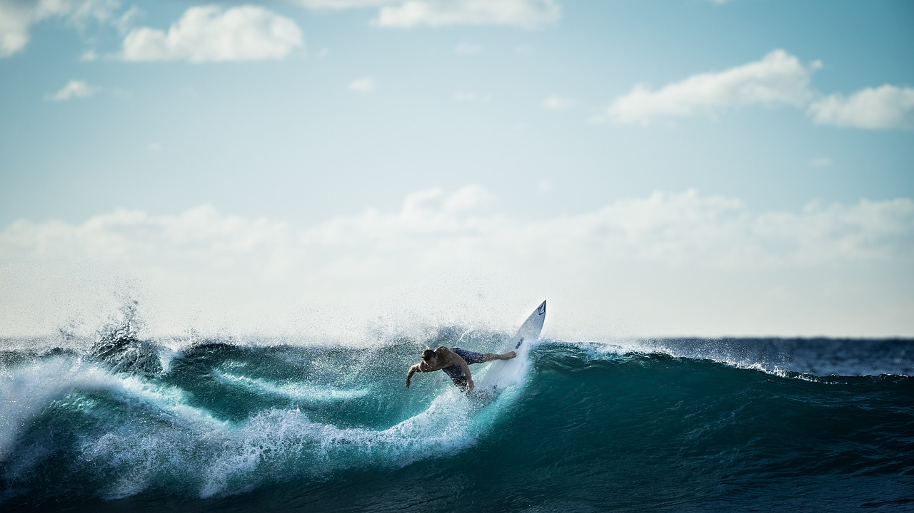

READ ALL
ABOUT IT

When people think of surfers, they think, duuuude, toned body, wavy hair and incredible balance.
What the average Joe Soap doesn't realise, is that the benefits surfing can contribute to a persons life are monumental. Hear me out...
Firstly, in todays daily struggle, most people are bombarded by information the moment they open their eyes in the morning. Long gone are the days of simple life, everything seems to get more complex and divided the deeper we plunge into a world conducted by technology (Don't get me wrong, technology has upsides). The pandemic showed us that slowing ourselves down and getting back to the basics in daily life can cause us to feel more connected and happier in our lives. I find a paralell to this in surfing that many others do also.
If you live in a warm part of the world where the sun is a given (I hate you, lol) you may not get the same feeling but, if you live in a cold part of the world, the moment you strip down and put on that wetsuit, everything else in our busy minds disappear. When your toes touch the brisk water and your head dips under that first wave, there is nothing else to think about. It's just you, your board and the waves.
Mindfullness has blown up in the last few years, as stigma to depression is ruled out and people realise that it's okay to talk and combat feelings and thoughts, rather than thiking you're different or not 'normal' and spiralling. Surfing can be therapudic in the sense that it accomplishes that same goal that practicsing mindfullness teaches you. In a nutshell, get out of your head and live in the moment.
Aside from this mindful impact, surfing can also contribute to making other struggles of life less and less. Giving your body a salty bath is good for your skin, performing padding, swimming and balance when surfing can make/keep your body strong, fit, and ready for any manual task. Your ability to be comfortable in a stressful situation is heightened, as you learn to be okay with being out of control when powerful waves knock you to and fro in the water time and time again.
Unfortunately, water is unpredictable and the longer you spend in it, the more likely you, or someone near you will have a dangerous encounter.There are positives to this also. These encounters make you more compasionate for others and look out for strangers, knowing they will do the same for you.
If you ever get the chance, I hope you give surfing a try.
Why picking up surfing is a great idea
Date : Mon 4th Sep 2022
Author : Brian Jacobs
Photogapher : Ally newman